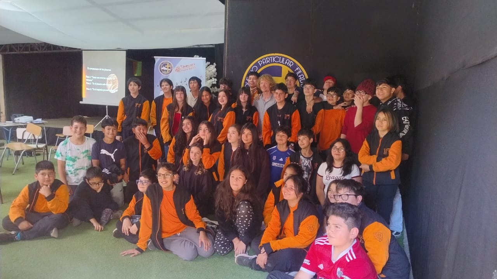
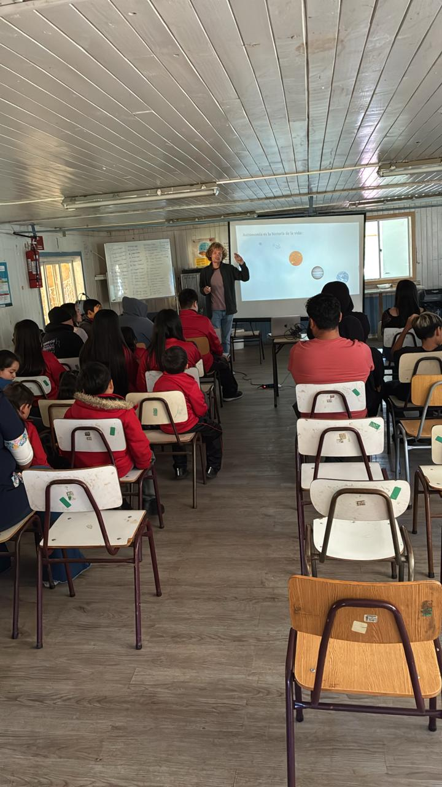
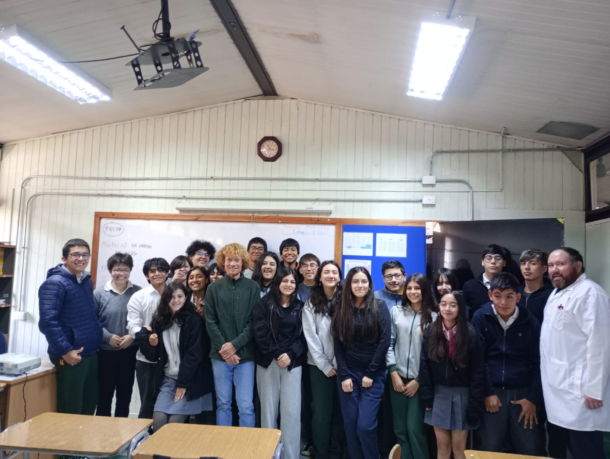
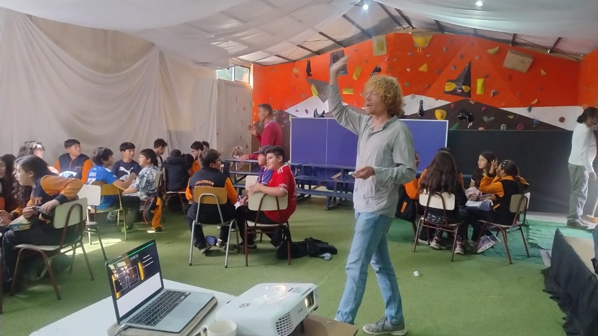
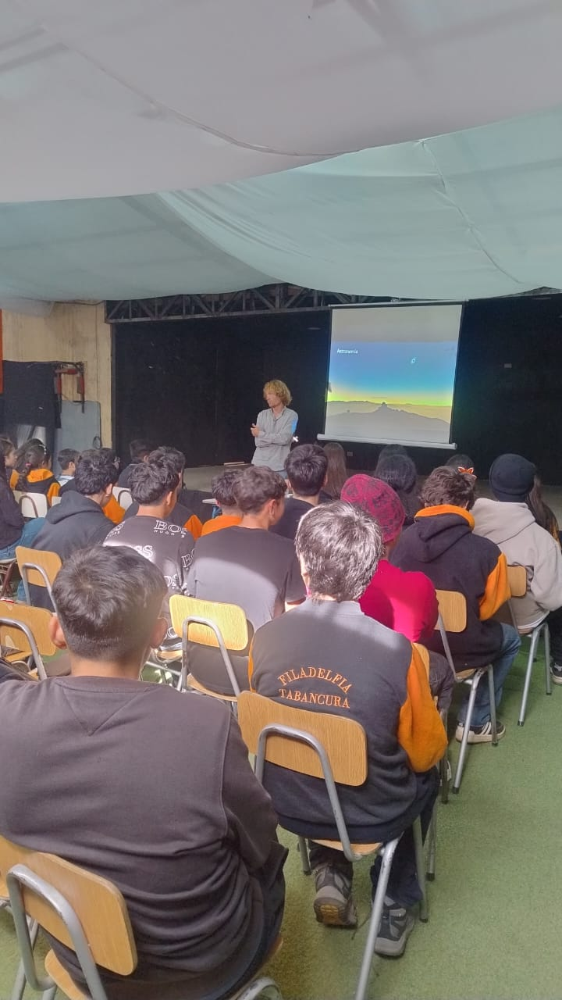
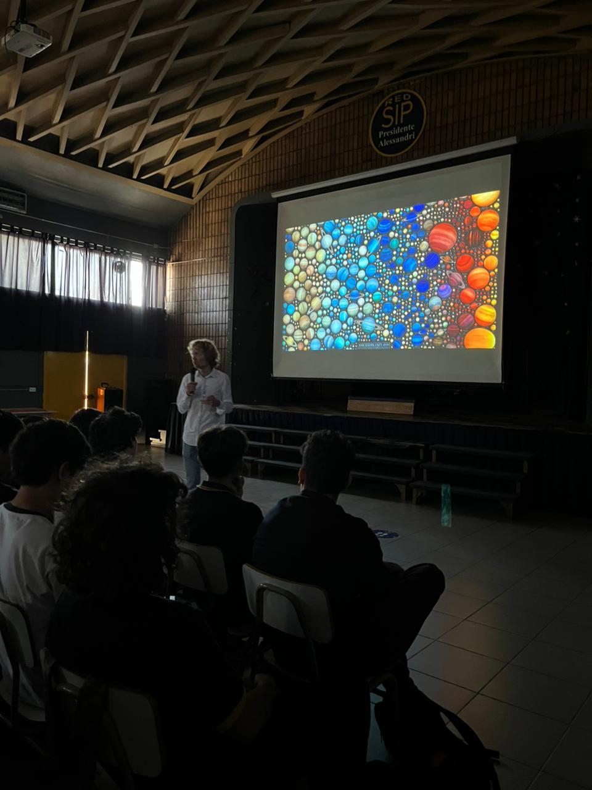

Astronomy in Public Schools
Classroom visits from the lakes of the south to the outskirts of Santiago.
Most Marches, for Chile's Semana de la Astronomía, I take planet formation out of the institute and into public classrooms — mostly rural schools and schools in under-resourced communities, where a visit from a working astronomer is a rare thing. Other visits happen whenever a school asks.

Bringing astronomy to the classroom
The classes run 45 to 90 minutes and are built around a single question: how do you build a planet out of dust? We start from what students can see for themselves — the night sky over their own town — and work outwards to protoplanetary disks, the telescopes in the Chilean desert that image them, and the simulations that try to explain what those images show.
I deliberately target schools far from the university circuit: escuelas rurales in Los Lagos, Los Ríos, La Araucanía and O'Higgins, and public schools in Santiago communes such as Peñalolén, Pudahuel and Independencia. Chile hosts the world's largest observatories, but for many students that astronomy has never had a deeper meaning. Part of the point of the visit is that it does now.
The classes are taught in Spanish, with the exception of a primary-school class given in German at the Theodor-Heuss-Grundschule in Oftersheim.

Schools visited
Classes given in public and rural schools across Chile — most of them for Astronomy Week — and in Germany.
2026 — Astronomy Week, 90-minute classes
6 March 2026: Escuela Rural Paraguay, Frutillar, Región de Los Lagos.
10 March 2026, 10:00 hrs: Colegio Teniente Merino, Valdivia, Región de Los Ríos.
10 March 2026, 15:45 hrs: Liceo Santa María de la Blanca, Valdivia, Región de Los Ríos.
11 March 2026, 11:00 hrs: Colegio Particular Filadelfia Tabancura, Afunalhue, Villarrica, Región de La Araucanía.
11 March 2026, 14:00 hrs: Escuela Rural Bocatoma Llongahue, Panguipulli, Región de Los Ríos.
23 March 2026: Liceo Bicentenario Valle Hermoso, Peñalolén, Santiago. Astronomy Day talk for grades 5 and 6, two classes per level, ~100 students.
26 March 2026: Colegio Presidente Alessandri, Independencia, Santiago.
2025 — Germany
29 July 2025: Theodor-Heuss-Grundschule, Oftersheim, Germany. 120-minute class.
2023 — 45-minute classes
27 February 2023: Colegio Bicentenario Madre Ana Eugenia, Pudahuel, Santiago.
24 March 2023: Colegio Francisco Arriarán (SIP), Santiago.
30 March 2023: Public school in San Antonio, Región de Valparaíso.
2022
13 December 2022: Colegio Humboldt, Pupuya, Región de O'Higgins.
In the classroom





Support and thanks
These visits depend entirely on the teachers, science coordinators (in particular Gabriel Ruete Núñez) and school staff who open their classrooms, rearrange their timetables and get several dozen students into a room with a projector. My thanks to all of them.
My outreach work is carried out as part of the Millennium Nucleus Young Exoplanets and their Moons (YEMS), funded by the ANID—Millennium Science Initiative, centre code NCN2021_080.